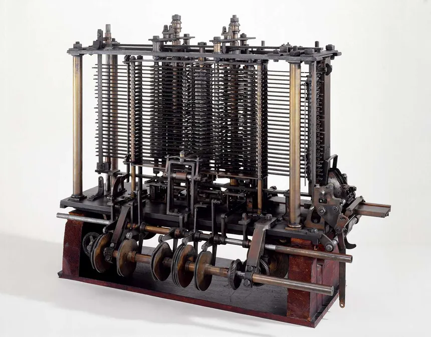
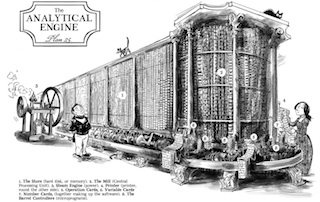

|  | |
 |
Charles Babbage was a huge milestone in the journey of computer science, he was a masterful mathematician who's scematics and knack for machinery created a landmark in the histor of computer-science and the world. Before his Analytical Engine, Babbage made the scematics for a device called the DIfference Engine. It was meant to be able to automatically calculate preform calculations to take care of the tedium of the work scientists and mathmatecians had to do. He officially started working on the designs during 1821.
However, Babbage was not an experienced engineer and had made several errors and understimated just how costly and time consuming making the device would be. Due to that the full machine was never able to be completed before the goverment stopped sponsoring him and with a lack of funds the project had to be dropped.
Although the Difference Engine was an impressive piece of theoretical machinery, what truly left his mark on the world and dubbed him the name of “the Father of the Computer” was his Analytical Engine. While creating the DIfference Engine he thought of improvements and eventually another machine that would have far more calculating power than the difference engine. This Device is considered the first computer and is known as the Analytical Engine.
The Ananlytical Engine was to be a genreal-purpose fully atuomated programable computer that would be able to preform any calculation set for it. Its 4 main components were the mill, the store, the reader, and the printer. The mill was much like a morden day CPU that did all of the calculations, the store held the data much like a computers memory, and the reader and printer were the input and output devices respectively. The store was enough to hold 1,000 50-digit numbers. The reader was used by punch cards and due to that it had flexibility never seen before espeically as it had the ability to do calculations out of sequential order depending on a value. THat is what put it ahead of any supposed competition and gains the recognition of being the first computer.
Fin